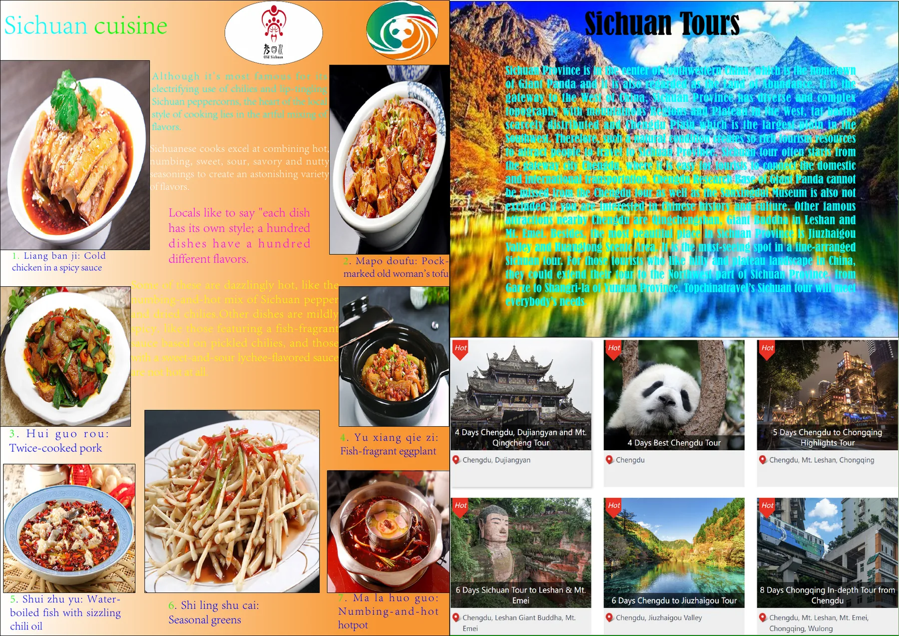

Selected Project / Sun Chen
Sichuan Travel Brochure
A two-spread A3 editorial brochure introducing Sichuan and historic Jinli street.
The brochure combines destination facts, landscape photography, food culture and travel information in a fast, colour-led reading sequence.
Process
How the work developed
01
Research Jinli street, local culture and travel facts.
02
Build a colour-block grid for images and reading order.
03
Edit imagery and copy to balance density with pace.
Visual evidence
Selected outcomes


Outcome
Result
A vivid two-spread experience that gives cultural tourists multiple entry points without losing navigation clarity.
Reflection
What comes next
The spreads remain text-heavy. A future version would reduce secondary copy and test the hierarchy at full A3 print size.